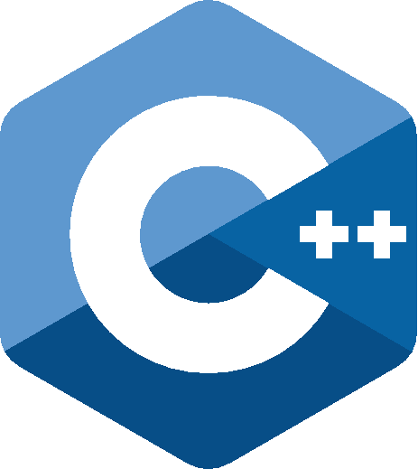

Competitive programming

Created by Herinson Rodrigues
Conteúdo
- Introdução
- Anatomia de um problema
- Rotinas de I/O
- Onde treinar
Introdução
Fato: "ACM-ICPC é uma competição de programação disputada"

O que veremos pela frente?
"Dado um conjunto de problemas bastante conhecidos em Ciência da Computação, seu trabalho é resolvê-los o mais rápido que você puder!"
Como assim?
- Os problemas já estão resolvidos
- Pelo menos os problem setters já resolveram os problemas

Anatomia de um problema

O problema

Bullshit!

Informações relevantes!

Entrada e saída

Restrições e exemplo de I/O

O que isso significa?
- Seu programa deve produzir a mesma saída que o problem setter produziu utilizando uma entrada secreta
- Seu programa deve resolver o problema dentre um limite de tempo
Rotinas de I/O

1) O número de casos de testes é dado na primeira linha da entrada
int TC, a, b;
scanf("%d", &TC);
while (TC--) {
scanf("%d %d", &a, &b);
printf("%d\n", a + b);
}
Exemplo

2) Múltiplos casos de testes terminam com um valor especial de entrada (geralmente zeros)
int a, b;
while (scanf("%d %d", &a, &b), (a || b))
printf("%d\n", a + b);
Exemplo 2

3) Múltiplos casos de testes terminam com EOF (fim de arquivo)
int a, b;
while (scanf("%d %d", &a, &b) == 2)
printf("%d\n", a + b);
int a, b;
while (scanf("%d %d", &a, &b) != EOF)
printf("%d\n", a + b);
Exemplos 3

Onde treinar


Onde treinar


Estrutura de dados em c++ e java

Created by Herinson Rodrigues
Estrutura de dados
Uma estrutura de dados é um meio de armazenar e organizar dados (não os da imagem!). Estes dados podem ser tipos de dados primitivos e tipos de dados abstratos
Embora uma estrutura de dados não consiga resolver um problema por ela mesma, é fundamental saber escolher a estrutura adequada para cada tipo de problema
No processo de design de um algoritmo, é importante levar em conta:
- inserções
- buscas
- exclusões
- queries
- modificações
Limites dos dados primitivos
Todos os tipos de dados primitivos possuem um intervalo de representação numérica
| Tipo | Bit Width | Intervalo |
|---|---|---|
| char | 1byte | -127 to 127 or 0 to 255 |
| unsigned char | 1byte | 0 to 255 |
| signed char | 1byte | -127 to 127 |
| int | 4bytes | -2147483648 to 2147483647 |
| unsigned int | 4bytes | 0 to 4294967295 |
| signed int | 4bytes | -2147483648 to 2147483647 |
| short int | 2bytes | -32768 to 32767 |
| unsigned short int | Range | 0 to 65,535 |
| signed short int | Range | -32768 to 32767 |
| long int | 4bytes | -2,147,483,648 to 2,147,483,647 |
| signed long int | 4bytes | same as long int |
| unsigned long int | 4bytes | 0 to 4,294,967,295 |
| float | 4bytes | +/- 3.4e +/- 38 (~7 digits) |
| double | 8bytes | +/- 1.7e +/- 308 (~15 digits) |
| long double | 8bytes | +/- 1.7e +/- 308 (~15 digits) |
| wchar_t | 2 or 4 bytes | 1 wide character |
| Tipo | Tamanho (bits) | min | max | Precisão |
|---|---|---|---|---|
byte |
8 | -128 | 127 | From +127 to -128 |
char |
16 | 0 | 216-1 | All Unicode characters |
short |
16 | -215 | 215-1 | From +32,767 to -32,768 |
int |
32 | -231 | 231-1 | From +2,147,483,647 to -2,147,483,648 |
long |
64 | -263 | 263-1 | From +9,223,372,036,854,775,807 to -9,223,372,036,854,775,808 |
float |
32 | 2-149 | (2-2-23)·2127 | From 3.402,823,5 E+38 to 1.4 E-45 |
double |
64 | 2-1074 | (2-2-52)·21023 | From 1.797,693,134,862,315,7 E+308 to 4.9 E-324 |
boolean |
1 | -- | -- | false, true |
Quer dizer que só usar int pra tudo não funciona?
Não! Familiarize-se com esses limites:
- $2^{10} = 1,024 ≈ 10^3, 2^{20} = 1,048,576 ≈ 10^6$
- Inteiros de 32 bits com sinal (int) e inteiros de 64 bits com sinal (long long) possuem limites superiores de $2^{31}-1 ≈ 2*10^9$ e $2^{63}-1 ≈ 9*10^{18}$, respectivamente
- Ou seja, é seguro usá-los para números de até 9 dígitos (para o int) e de até 18 dígitos (para o long long)
- Para valores $\geq 2^{64}$, utilize a técnica Big Integer (próximas aulas)
Para pensar...
Um número natural é um inteiro não-negativo $(0, 1, 2, 3, 4, 5,...)$. A sua tarefa neste problema é calcular a soma dos números naturais que estão presentes em um determinado intervalo $[A, B]$ inclusive. Por exemplo, a soma dos números naturais no intervalo $[2, 5]$ é $14 = (2+3+4+5)$.
Cada caso de teste contém dois inteiros $A$ e $B$ $(1 \leq A \leq B \leq 10^9)$, representando o limite inferior e o superior respectivamente.
| Exemplo de Entrada | Exemplo de Saída |
|
1 10000 |
500500 |
O quão grande é o número $1$$0^{9}$?
Que tipo de dado seria ideal para representar as variáveis A e B?
$$\sum_{k=1}^{n} k = 1+2+...+n$$
é uma série aritmética dada por
$$\sum_{k=1}^{n} k = \frac{1}{2} n(n+1)$$
E para um intervalo fechado temos
$$\sum_{k=n_1}^{n_2} k = \frac{(n_2-n_1+1)(n_2+n_1)}{2}$$
Solução em C
#include <stdio.h>
int main() {
long long n1, n2;
scanf("%lld %lld", &n1, &n2);
long long sum = ((n2-n1+1) * (n2+n1))/2;
printf("%lld\n", sum);
return 0;
}
Problema 1
Solução em C++
Solução em Java
Problema 2
Solução em C++
Solução em Java
Referências

"The Algorithm Design Manual", Steven Skiena
Referências

"Competitive Programming 3", Steve Halim e Felix Halim
Referências

"Programming Challenges", Steven Skiena e Miguel Revilla